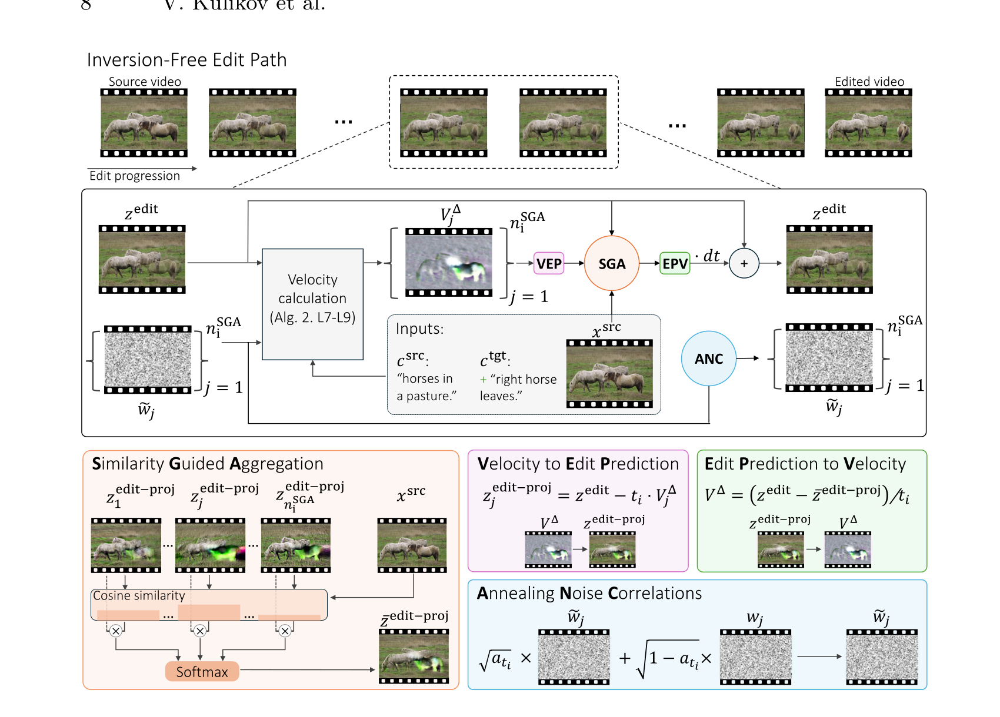
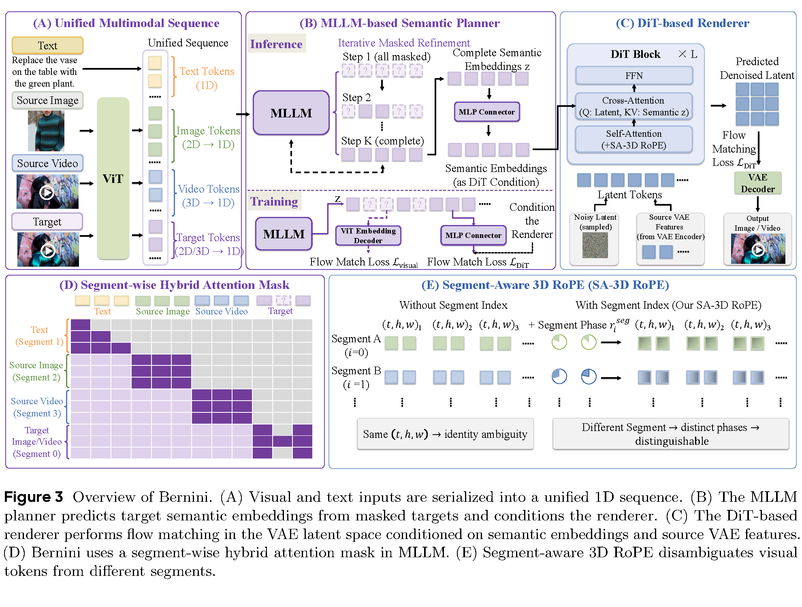
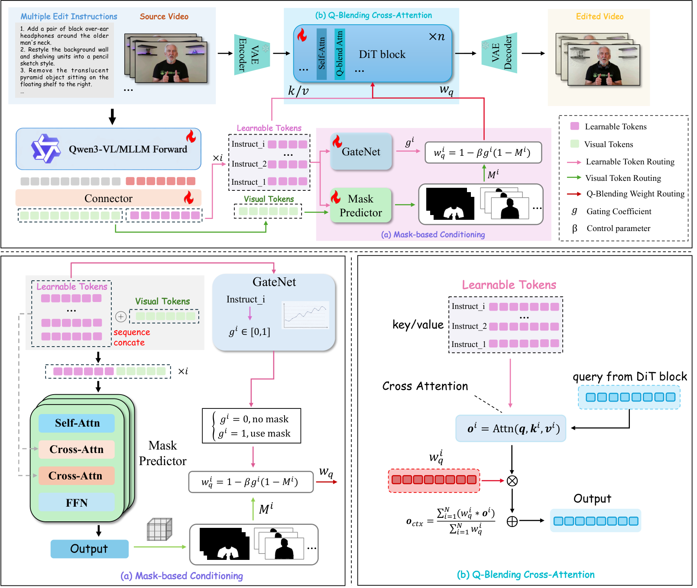
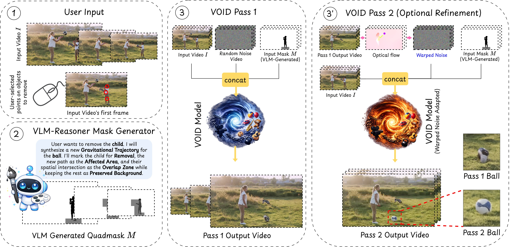
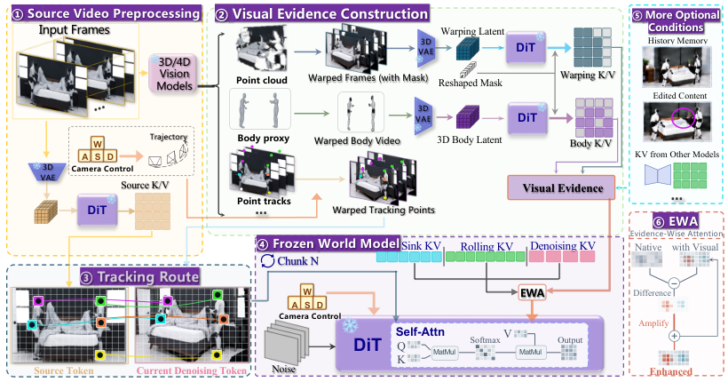
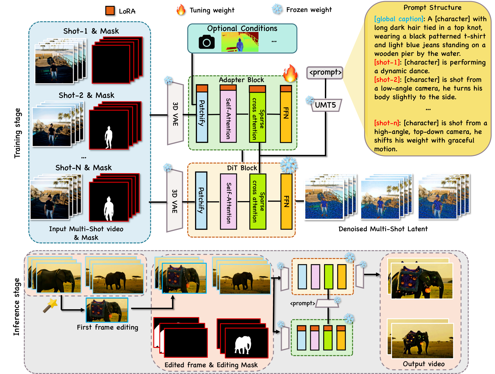

VIDEO EDITING
Video Editing Frontiers
Source video + instruction + controls
目标变化 / 非目标保持 / 时间一致性
Editing mechanisms
Sampling, learning & representation
Controllable changes
Local · motion · physics
World models
Region, dynamics & interaction
Persistent editing
Long video · multi-shot
Multi-turn · agents
State, memory & feedback
DATA & SUPERVISION
BENCHMARKS & EVALUATION
TOPIC
VIDEO EDITING
What changes when we edit a video?
从修改内容到执行机制：同一任务可以沿不同技术路线实现。
Editing mechanisms
编辑能力怎样获得？
Sampling
Learning
Transfer
源轨迹复用 → 条件生成 → 图像先验迁移
Controllable changes
目标变化由什么表示？
Appearance
Mask / keyframe / reference
Dynamics
Action / point tracks / camera
Interaction
Object removal / physical intervention
区域绑定、运动重写与必要的连带变化
Persistent editing
修改跨越哪些边界？
Time
Long video / streaming
Shots
Cross-shot identity / references
Turns
Memory / overwrite / undo
从单段输出走向连续执行与历史管理
Data & evaluation 配对是否只改变目标？评测是否能识别未执行、串扰和历史漂移？
02
TOPIC
VIDEO EDITING
Change, ,
输入条件决定编辑难度；目标修改决定哪些内容应该保留。
01
Change
Appearance：换衣服、替换对象
Motion：改变动作或相机轨迹
Interaction：删除对象及其后果
“把红衣改黑”与“取消接球者”需要不同的变化范
围。
02
Identity：仍是同一个人或对象
Context：未指定的背景与事件
History：前几轮仍有效的修改
删除接球者后，球继续按原轨迹运动，可能反而
是不正确的保持。
03
Text：语义目标
Mask / reference：范围与外观
Keyframe / tracks：像素与路径
目标首帧、逐帧 mask、target tracks 都向系统
提供了额外答案。
INSIGHT
比较模型时固定输入接口，并分别检查 edit success 与 non-target preservation。
03
TOPIC
I / MODELS & PRIORS / TRAINING-FREE EDITING
Training-free editing
Source coupling 的位置决定了哪些结构容易被保留，哪些结构能够被重写。
MECHANISM / METHOD
SOURCE EVIDENCE
INFERENCE / LEARNING
& feature reuse
source trajectory
→
attention / feature injection
重建偏差会传到目标视频；强复用限制几何变化。
→
target − source
通过差分方向修改源状态，采样稳定性成为关键。
Keyframe &
edited keyframe / matches
→
cross-frame propagation
依赖跨帧对应，遮挡与新显露区域最容易失效。
Shared backbone
无需训练编辑器；仍调用已经训练的图像或视频生成模型。
Compute
反演步数、source / target 双分支、候选数和外部首帧编辑都影响成本。
INSIGHT
主要 trade-off：source preservation 与允许重写的时空结构。
04
METHOD
I / MODELS & PRIORS / TRAINING-FREE EDITING
-free editing：直接构造 source → target 的传输路径。
EDIT ODE
Source query
Target query
Editing direction
State update
主编辑状态由完整源视频初始化。每一步累加目标与
源条件的 。
两次 query 共享噪声残差，减少条件差分中混入的随
机变化。
Video adaptation
State vs. query
主状态代表正在修改的内容；source / target query 是为了调用 flow model
构造的辅助带噪状态。
Edit strength
提高最高噪声时刻可释放更大的结构变化，也更容易丢失源布局。
INSIGHT
FlowEdit 提供编辑 ODE；视频时间先验来自替换后的 video backbone。
05
METHOD
I / MODELS & PRIORS / TRAINING-FREE EDITING
把 FlowEdit 推到最大噪声查询区间，让动作与动态事件可以被改写。

早期生成多个候选方向，外推 clean edit，再用 source
similarity 选择更对齐的结构。
后期逐步增强 之间的噪声相关性，减少独立噪声
造成的抖动。
Wan2.1 -14B 读取源 / 目标首帧。新对象和外观目标常由外
部图像编辑器提供。
Backbone
Frozen Wan2.1 -14B
Training
None; inference-time sampling
Input
Full source + captions + first frames
INSIGHT
选择早期粗结构， 稳定后期采样；两者作用在不同阶段。
06
METHOD
I / MODELS & PRIORS / TRAINING-FREE EDITING
DynaEdit: candidate selection & noise correlation
截断噪声区间更容易保留源运动； 可改粗结构，但需要稳定早期路径与后期采样。
/ coarse structure
/ solver stability
候选间使用不同噪声；每个候选内部的 source / target query 共享噪声。论文
配置在最早 3 步用 5 个候选，之后回到 1 个。
Early steps
弱相关 / 更多探索
候选可以形成不同动作、相机与布局。
Late steps
更强相关 / 更少抖动
降低每步重采样噪声引入的高频不稳定。
相关性沿 调度。固定所有步骤的噪声容易锁住早期错误
结构。
Preservation boundary
全局 cosine similarity 是软偏好；没有 protected-region mask 或局部不变保
证。
Cost & sensitivity
多候选增加前几步模型调用。、 temperature 与目标首帧都会影响结
果。
INSIGHT
最大噪声 query 仍从源视频初始化主编辑状态；候选聚合约束方向，噪声相关性约束采样稳定性。
07
TOPIC
I / MODELS & PRIORS / IMAGE-TO-VIDEO TRANSFER
Image-to-video transfer
Qwen-Video-Edit 训练视频接口；EditVid 在推理时连接冻结图像编辑器。
Train the temporal interface
Wan Video 将视频压为
适配 Qwen 图像
先训 projections，再适配编辑主干
训练迁移：新的 video representation
Reuse the frozen image editor
FLUX.2 Klein 保持冻结
连接邻近帧
补远程联系
推理迁移：新的 temporal coupling
Learned transfer
Inference transfer
EditVid 恢复 source trajectory； difference 产生 soft mask，融合编
辑与源区域。
INSIGHT
两条路线都借用图像先验，但训练需求、时序约束和推理成本不同。
08
TOPIC
I / MODELS & PRIORS / INSTRUCTION & UNIFIED MODELS
Learning an instruction editor
三个位置引入语义监督：与像素联合预测、先预测目标语义、或为输入赋予角色。
| Method family | Semantic pathway | Visual pathway |
|---|---|---|
| SAMA | 联合生成 semantic tokens SigLIP target anchors 提供训练监督 | source / noisy target 同一 恢复任务学习 motion prior |
| Bernini | 预测 target features 作为连续 semantic plan | / reference Wan renderer 合成目标 |
| TIDE | Gemma 提供语义条件 区分 token 用途 | 条件保留视觉细节 progressive multi-task training |
Common structure
/ reference 提供证据，noisy target 学习目标条件分布。
Key distinction
INSIGHT
这些模型都接受指令，但语义监督进入网络的位置、数据和训练对象不同。
09
METHOD
I / MODELS & PRIORS / INSTRUCTION & UNIFIED MODELS
Semantic Anchoring & Motion Alignment：在同一个 中学习语义修改与视频恢复。
Semantic anchoring
64 local + 1 global tokens
Target anchor frame 的 SigLIP features 提
供语义监督。
Motion alignment
Cube / speed / tube corruption
通过恢复视频学习 source motion prior。
Paired editing
Instruction triplets
Source + instruction + target
约 1.029M video-edit triplets 适配联合编
辑。
Training targets
Stage 0 使用约 2.5M image-edit pairs，并加入 Cube Inpainting、Speed
Perturbation、Tube Shuffle。
Inference
从噪声开始，与 target video 联合生成。Target anchor
frame 只用于训练监督。
INSIGHT
Motion Alignment 通过恢复任务学习运动理解与保持；目标动作重写仍需单独验证。
10
METHOD
I / MODELS & PRIORS / INSTRUCTION & UNIFIED MODELS
semantic planning：先预测目标视觉语义，再用 source-conditioned diffusion 渲染。

Bernini · Figure 3 (A–C): inputs, semantic planner and renderer
从 source、instruction、references 预测 target
features，再得到上下文化 hidden states。
Condition interface
MLP connector 将 hidden states 接到 ；原
生 T5 文本条件仍然保留。
/ reference features 保留视
觉证据，只有 target 被逐步去噪。
INSIGHT
Source preservation 同时依赖 clean visual conditions 与配对监督。
11
METHOD
I / MODELS & PRIORS / INSTRUCTION & UNIFIED MODELS
Bernini: how the and are trained
先学语义转换，再学视频渲染，最后轻量联合优化。
I /
256p / 2 fps
学目标语义；text NTP 保
留语言与理解。
II /
480p / 16 fps
学目标视频；更新
与 text encoder。
III /
480p / 16 fps
三项损失联合优化语义预测与渲染；后期加入
CoT 数据。
Natural visual transitions
来自同一真实视频的两个 clips；近 30M image pairs 来自
tutorial keyframes。它们提供变化先验。
Instruction-aligned refinement
传播式 V2V、motion-aware V2V 与 reference 数据补充编辑监督。Stage II
的相邻 pair 采样比例逐渐降到 0。
INSIGHT
相邻真实片段有助于学习变化；高质量 editing pairs 进一步约束指令与非目标保持。
12
TOPIC
II / TASKS & CONTROL / LOCAL & COMPOSITIONAL
Local & compositional control
空间范围、目标外观和操作绑定，分别由哪些条件提供？
Where
显式给定需要修改的像素区域
Edited keyframe
What it looks like
给定一个时刻的目标外观，再传播
Reference image
Which appearance
迁移身份、材质或风格等参照
Which operation goes where
多条指令分别绑定主体与区域
Region binding
预测错误的区域，会把正确的操作施加给错误的人或物体。
Temporal coverage
一张首帧无法约束后续才出现的对象；遮挡后重现需要跨时刻的对应信息。
INSIGHT
局部保持的关键是区域绑定，以及边界外的信息如何进入生成过程。
13
METHOD
II / TASKS & CONTROL / LOCAL & COMPOSITIONAL
：从 teacher 的 guidance 差异中学习外观传播。
01
Frozen teacher
同一 noisy input
低 / 高 估计
→
02
构造条件变化对应的
one-step clean estimates
→
03
Trained propagator
VACE adapter 学习
Guidance-Modulated FM
提供目标外观；完整源视频提供运动和场景。首帧通常由外部图像编辑器得
到。
What is trained
INSIGHT
PropFly 学的是外观变化沿时间的传播，source motion 是主要保留对象。
14
METHOD
II / TASKS & CONTROL / LOCAL & COMPOSITIONAL
将多条指令分别绑定到 region、subject 与 attention query。

Instruction queries
每条操作使用独立 instruction query；Qwen3-VL 为其建立语义
表示，再送入区域与控制分支。
Mask predictor 定位区域，GateNet 调整操作作用范围，降低不
同主体间的 。
区域感知的 query 混合控制 。
Backbone
Data
CoinVE-200K; 2–5 operations / sample
Labels
Per-operation masks + composite mask
INSIGHT
评测同时看 per-operation success、all-operation success 与 non-target preservation。
15
TOPIC
II / TASKS & CONTROL / MOTION & ACTION
Motion, action & camera control
文本动作、身体结构、点轨迹与相机路径提供不同强度的动态约束。
Event / intent
“走近杯子，拿起，再喝水”
Pose / depth
Body / geometry
规定骨架或结构轨迹
结构条件编辑器
Space–time path
指定点的身份、位置与可见性
Camera control
Viewpoint
改变视点，并处理遮挡与新显露
“拿杯子并喝水”包含靠近、接触、持杯移动与杯口接触，不能由单个轨迹分数
代替。
Motion preservation
传播外观通常希望保留源运动；动作替换则需要主动释放这部分约束。
INSIGHT
Action editing 需要检查事件顺序与物体交互；平滑运动不能替代动作完成。
16
METHOD
II / TASKS & CONTROL / MOTION & ACTION
用 source / target point tracks 指定运动变化，保留 source RGB 作为视觉条件。
01
Track source
TAPNext 提取
稀疏 2D point tracks
→
02
Specify target
用户 Bézier curves
编辑轨迹与时序
→
03
训练控制分支
冻结 CogVideoX-5B
Frame interpolation、time resampling 与 spatial transforms 生成可训练的
运动差异与对应 tracks。
Control granularity
冻结 CogVideoX-5B，训练类似 ControlNet 的 分支。Tracks 指定位
移，接触关系仍依赖生成先验。
INSIGHT
源视频作为 进入网络；target tracks 提供额外运动监督。
17
CASE
II / TASKS & CONTROL / MOTION & ACTION
“The man does not walk toward the door; instead, he drinks water.”
Source / walks toward the door
Edited / walking retained, drinking added
Target event
末段出现喝水动作。
Source event
原走路仍被保留，未完成替换。
Diagnosis
Action appending ≠ substitution.
DIAGNOSIS
一次成功替换需要同时满足目标动作出现与被替换动作消失。
Editing examples
18
METHOD
II / TASKS & CONTROL / PHYSICS &
deletion：删除对象后，重新生成受它影响的交互结果。

删除区、受影响区、重叠区、保护区采用不同标签。
先生成反事实结果，再用 flow 引导可选的细化。
Causal scope
删除接球者后，球的后续运动也需要重新生成。
Condition
Source RGB + + description
Pipeline
VLM / segmentation → generator → refine
Task
Object-and-interaction removal
roles
删除区 / 受影响区 / 重叠区 / 保护区分别编码。重叠区允许反事
实运动经过旧对象位置。
INSIGHT
“需要保留什么”取决于干预：被删除对象造成的后果可以随之改变。
19
DATASET
II / TASKS & CONTROL / PHYSICS &
重力条件数据集：在 UE5 中改变重力、重放操作，再训练模型生成对应运动。下图以跳跃为例。
常规重力
同一场景、初态与跳跃输入
1.0 × g
→
较早落地
低重力
同一场景、初态与跳跃输入
0.1 × g
→
滞空更久
固定场景、初态、角色控制器与相机规则。
记录各重力下的视频、动作与物理状态。
用重放视频对 Wan2.2 / LingBot-World 做 。
论文示例中，生成的下落运动随重力条件变化。
INSIGHT
当前验证集中在重力条件生成；对真实源视频改重力并保持其余内容，仍待验证。
20
TOPIC
II / TASKS & CONTROL / WORLD MODELS
World models × video editing
共同点是可干预的生成状态；操作对象和已验证任务有明显区别。
| State / intervention | Representative work | What the evidence supports |
|---|---|---|
| Visual evidence / camera | World in World | 观测与几何证据约束 camera re-rendering |
| Explicit scene / viewpoint | NeoVerse | + completion；附录含外观编辑 |
| Ongoing / action | ActionSplice | 生成中修正 movement / camera actions |
| Physical variable / replay | PhysEditWorld | Gravity 配对对条件生成与 的训练效用 |
Source video editing
以已有观测为条件，修改外观、视角或交互结果，检查非目标内容。
intervention
在生成进程中修改动作或状态，检查响应时间、前缀保持与后续一致性。
INSIGHT
Camera interventions 检验视角一致性；action / gravity interventions 还需检验轨迹与交互后果。
21
METHOD
II / TASKS & CONTROL / WORLD MODELS
：将观测、warp、几何与历史作为可查询的视觉证据。

为观测、warp 与几何状态记录 camera / time /
validity。
决定从哪里取证据。
Evidence-wise
分别调节证据影响，编辑仍需要首帧、mask 与描述。
Backbone
Frozen LingBot-World-2
Metadata
Camera / time / validity
Edit input
Edited first frame + mask + description
对应关系限定 attention 读取的位置，evidence-wise 分别
调节不同证据。
INSIGHT
主要定量证据来自 camera re-rendering；长期 memory 等能力需区分已验证与展望。
22
TOPIC
II / TASKS & CONTROL / WORLD MODELS
Scene editing & intervention
从显式场景、正在生成的 ，到共享随机性的反事实分支。
MECHANISM / METHOD
SOURCE EVIDENCE
INFERENCE / LEARNING
Explicit scene state
monocular video
→
重建可随时间变化的三维表示，再由视频生成器补全新视角中缺失的内容。
Action update during sampling
ongoing generated
→
correct at
新控制到达当前求解步后，受训 修正内部状态，继续生成后续视频。
Paired hypothetical outcomes
→
branch under interventions
共享随机性用于定义分叉对照；当前实验验证尚待开展。
ActionSplice timing
r 是求解步；视频边界 m 是输出时间。CST-T 在前者修正后者
的后缀。
Evidence boundary
CST-T 的严格前缀保持针对 ；最终像素仍需检验。
INSIGHT
23
TOPIC
III / TIME & INTERACTION / LONG & STREAMING
Long video & streaming
Offline duration、causal output、real-time response 对应不同系统目标。
MECHANISM / METHOD
SOURCE EVIDENCE
INFERENCE / LEARNING
Training-free extension
offline
→
+ anchor
全局锚点缓解漂移，但过强约束会压制真实变化。
Trained streaming editor
source-aligned
→
+
少步输出降低计算量，仍需处理自己的历史误差。
Adaptation & reuse
existing streaming model
→
transfer control / reuse prior
前者训练离线控制，后者组织 training-free 双分支采样。
What persists
边界传递像素、、 或 reference，决定状态能保留多
久。
What to report
首帧延迟、稳态吞吐、峰值显存、总时长，以及随时长增长的漂移。
INSIGHT
报告 latency、throughput、memory 与 long-horizon drift，才能解释“实时”。
24
METHOD
III / TIME & INTERACTION / LONG & STREAMING
从双向编辑模型到 streaming editor：训练、少步采样与系统优化共同作用。
01
Editing pretraining
T2I / T2V / I2I / V2V
获得双向编辑能力
→
02
压缩为 two-step sampling
→
03
Long-horizon
+
causal 输出视频
稳态 8 RGB frames / ； 与 保留
有限历史，source 持续输入。
30.19 FPS / B200 / 720×1280，长期定量证据到一分钟。少步 distillation、
FP8、kernel 与 优化共同构成该结果。
INSIGHT
吞吐率不能直接换成首帧延迟；open-ended 接口仍要测长期漂移。
25
METHOD
III / TIME & INTERACTION / LONG & STREAMING
在双向模型上学 control，再迁移到冻结的 causal generator。
Bidirectional training
Task-specific conditioning branches
Causal transfer
Frozen causal backbone
对 更新做
抑制与 冲突的方向
保留实时 的计算结构
Transfer trained control, preserve causal prior
Visibility mismatch
双向训练能看到未来；causal 只能读历史。适配需要处理这项 feature
gap。
Condition budget
Stylization、inpainting、depth-to-video 使用不同条件；mask / depth 必须
计入接口。
INSIGHT
部分任务需要 mask 或 depth；冻结主干仍包含离线控制训练。
26
METHOD
III / TIME & INTERACTION / MULTI-SHOT EDITING
跨过 shot cut，把同一主体与目标外观绑定到不同视角。

用深度与相机重投影构造多视角代理，使同一外观修改能对应到
不同视点。
Supervisory Adapter 连接条件，将多个镜头与编辑目标打包为共
同 token 序列。
Sparse
通过稀疏交互传递共享主体与目标外观。
Backbone
Input
Source + masks + edited first frame
Training
Depth / camera reprojection proxies
INSIGHT
真正困难的测试是主体缺席后重现，以及大视角变化后的编辑保持。
27
METHOD
III / TIME & INTERACTION / MULTI-SHOT EDITING
Shot assignment、visual memory 与 feedback 构成跨镜头执行流程。
01
Locate & assign
切分镜头，定位实体
分配需要执行的指令
→
02
Render with memory
before / after references
调用 HappyHorse 1.0
→
03
正负反馈修订 prompt
重试相关镜头
Memory unit
保存视觉参照，供多个镜头使用。
Evidence scale
25-case benchmark；有效分母与服务拒绝处理影响均值。
INSIGHT
跨镜头一致性既可以来自模型内 attention，也可以来自模型外的 reference 管理。
28
TOPIC
III / TIME & INTERACTION / MULTI-TURN & AGENTS
Multi-turn editing
检索过去的视觉内容，还需要知道哪些修改仍然有效。
Source
original identity
不可变参照
→
Turn 1
red shirt → black
新增修改
→
Turn 2
change background
保持衣服修改
→
Turn 3
undo shirt edit
背景修改继续有效
检索相关历史，按重要性动态 tokenization / compression，再注入 。
需要记录哪些修改仍有效，以及被覆盖、被撤销的对象与范围。
INSIGHT
Undo 需要原始参照与有效修改记录；仅检索历史画面无法区分应保留与应撤销的变化。
Memory-V2V · Editing examples
29
CASE
III / TIME & INTERACTION / MULTI-TURN & AGENTS
Apply, hold,
将左侧人物的衣服改黑、右侧人物的毛衣改为深蓝，保持后再恢复原色。
Source
Turn 1 / apply
Turn 2 / hold
Turn 3 /
Binding
两名人物分别接收自己的颜色修改。
Persistence
第二轮维持两项有效修改。
Restoration
第三轮恢复原衣服颜色。
DIAGNOSIS
观察同一段视频中，目标绑定、跨轮保持与恢复是否同时成立。
Editing examples
30
TOPIC
III / TIME & INTERACTION / MULTI-TURN & AGENTS
Editing agents
条件准备、工具执行与失败返修，分别影响系统效果和成本。
Aurora · tool preparation
从自然语言请求到可用的生成条件
MMLVE · shot coordination
按 shot 分配任务
Global Memory Card 维持目标外观
检查失败并修订执行 prompt
底层 editor 为外部模型
从单次调用到多镜头执行与返修
固定底层 editor 和调用预算，再比较有无 reference 检索、分镜分配、反馈返
修。
End-to-end cost
记录工具准确率、调用次数、等待时间、服务拒绝和最终失败率。
INSIGHT
需要分别记录 tool accuracy、edit success、重试次数与端到端成本。
31
TOPIC
IV / DATA & EVALUATION / DATA & SUPERVISION
Where do target videos come from?
真实源上的编辑、分别生成的配对、teacher 估计与模拟器重放提供不同监督。
MECHANISM / METHOD
SOURCE EVIDENCE
INFERENCE / LEARNING
real source video
→
expert edit / propagation
源保持明确，编辑失败和筛选偏差可能进入 target。
Goku movement
matched keyframes
→
two generations
两段运动与背景可能同时变化，需检查非目标错配。
Online / simulation
teacher estimates / replay
→
condition change / physics
前者受 teacher 能力约束，后者受变量与模拟域覆盖约束。
Pair validity
检查目标变化以外的身份、背景、运动是否错配，避免把随机差异学成编辑。
Filtering bias
只保留高分样本会改变任务分布；需要记录难例被丢弃的原因与比例。
IMPLICATION
配对有效性决定监督质量；样本数和任务标签不能单独说明这一点。
32
TOPIC
IV / DATA & EVALUATION / BENCHMARKS & EVALUATION
What counts as a successful edit?
分开观察目标完成、非目标保持与输出质量，才能解释失败来自哪里。
01
对象、属性、动作与事件顺序
定位到正确区域和时间
组合任务看每项与全部完成
检查每个操作，并保留 all-operation success。
02
身份、背景与有效历史修改
允许反事实的必要后果改变
检查跨帧、跨镜头、跨轮漂移
改变物理交互时，必要后果也属于目标变化。
03
Quality & coherence
画质、闪烁、运动与接触
长视频关注累积错误
音视频任务还需要同步证据
AV editing 还要检查音频内容与声画同步。
IMPLICATION
很高，既可能说明保留成功，也可能意味着根本没有编辑。
33
TOPIC
IV / DATA & EVALUATION / BENCHMARKS & EVALUATION
Benchmark landscape
按任务与可见证据选择 benchmark，再讨论模型分数。
| Research question | Resources | Evidence to inspect |
|---|---|---|
| Visual editing | FiVE / IVEBench / VEFX | 指令、保持、质量与输入条件 |
| Compositional binding | CoVEBench / CoinVE-Bench | 每项操作、全部完成与主体绑定 |
| Motion & structure | Goku-Bench / MotionV2V | 事件、轨迹、相机与非目标变化 |
| Physics & world | CRONOS / What-If World | 无关扰动稳定性 / 成对物理干预 |
Comparable interfaces
Text-only、edited keyframe、mask、tracks 的目标信息量不同，分别列出。
Failure granularity
均值之外保留 missed edit、wrong entity、collateral change、temporal drift
等失败类型。
IMPLICATION
最后一类包含生成与物理预测诊断，不能直接混入 instruction-edit 排行榜。
34
TOPIC
IV / DATA & EVALUATION / BENCHMARKS & EVALUATION
Can the judge detect an unedited output?
No-edit：直接把 source 作为 output，检验指令完成指标的判别力。
VEFX Motion33
IF · 1–4 · Reward-4B
高于该协议的被测编辑方法
Omni Temporal-200
Overall · full video · Qwen3-VL-32B
高于该协议已有结果的编辑方法
IVEBench Short64
IS · 1–5 · Qwen2.5-VL-72B
该设置能压低无编辑输出得分
PROTOCOL SNAPSHOT 2026-09-26 / NO-EDIT EXCLUDED FROM EDITOR RANKING
IMPLICATION
三个分数属于不同量表；共同诊断的是评判者是否把保守输出误认成成功编辑。
本地 benchmark 汇总（2026-09-26）
35
TOPIC
IV / DATA & EVALUATION / BENCHMARKS & EVALUATION
Evaluation protocol
抽帧位置、上下文与 rubric 决定 judge 实际看到了哪些证据。
01
12 frames / full video
时间位置、音轨、分辨率
→
02
Judge & rubric
模型版本、prompt
完成 / 保持 / 质量的标准
→
03
No-edit + 人工分歧
失败率 + 有效样本分母
Observed sensitivity
本地 12 帧与全视频设置会改变分数与排序，变化方向还依赖 judge 容量。
Comparable reporting
固定 cases 与输入接口，保留失败案例，再报告分项和区间。
IMPLICATION
“更长输入”提供更多证据，但准确性仍需人工或可验证任务来校准。
本地 benchmark 汇总（2026-09-26） · CoVEBench · MMLVE-Agent
36
TOPIC
OPEN PROBLEMS / 1 OF 5
Action & object interaction
动作编辑还需要绑定已有物体、建立接触，并让其他参与者与物体状态作出响应。
| Open question | What remains difficult | Diagnostic case |
|---|---|---|
| 把动作绑定到原视频中的物体， 确认身份、初始位置与可用状态 | 叼起原地面上的骨头，避免新增替身 检查物体轨迹、数量与身份 | |
| 手与物体的接触、姿态与状态变化 能否在同一时间线上成立？ | 抓稳、倾倒、放回，逐段检查 穿模、滑动、开合与液体变化 | |
| 多个人或物体能否协同响应， 让动作、接触与回应按顺序发生？ | 双人递杯：递出、接住、松手 检查角色、交接时刻与物体连续性 | |
| 用新动作替换原事件， 并同步改变必要的交互后果 | 把原投球改为把球放进箱中 旧投球消失，原球进入原箱 |
Existing objects
源视频可提供物体身份、几何与初始状态；如何把这些证据转成接触和动作约
束，仍需专门设计。
Compositional control
多角色、多物体、多指令需要分别绑定。应同时检查每项交互和全部交互的完
成情况。
INSIGHT
交互编辑需同时验证对象绑定、接触时序与物体状态，并允许必要的轨迹和交互后果随目标动作改变。
37
CASE
OPEN PROBLEMS / ACTION & OBJECT INTERACTION
Dog–object interaction
任务：让狗叼起原视频地面上的骨头。检查同一物体的接触、拾取与后续运动。
Source
原骨头在地面
Archived target
首帧已叼着白色骨头
LucyEdit
原骨头仍在地面
Gemini Omni Flash
末段靠近骨头，尚未拾起
Posters · Source / target / LucyEdit: 2.40 s · Omni Flash: 3.25 s
原骨头黄褐色；target 中的骨头变成白色，形状也
不同。
Omni Flash 末段靠近原骨头，片段内未见骨头离
地。
LucyEdit 留下原骨头，并改变了狗的毛色。
DIAGNOSIS
原物体交互要求同一对象从地面进入嘴中，并保持接触与运动连续；只出现叼骨头的画面还不足以判成功。
Editing examples · LucyEdit · Gemini Omni Flash
38
TOPIC
OPEN PROBLEMS / 2 OF 5
History & multi-turn editing
需要保存可追溯的视觉证据，也需要知道每轮指令改变了什么、哪些修改仍然有效。
| Open question | What remains difficult | Diagnostic case |
|---|---|---|
| 原视频、历史输出与指令保存什么？ 压缩后如何保留下一轮需要的依据？ | 仅上一轮 / 全历史 / 结构化记录 比较长序列的身份与修改保持 | |
| 新指令如何覆盖旧指令， 并确定每个对象当前有效的修改？ | 蓝杯改红，再改绿，背景不变 检查指代、冲突与当前有效颜色 | |
| 撤销某步时保留其他有效修改， 同时处理依赖该步骤的后续操作 | 撤销杯子颜色，保留新背景 撤销递杯后，接杯动作应如何处理？ | |
| 长遮挡、跨镜头与多轮重编码后， 如何找回同一对象与历史约束？ | 物体离场后再出现，继续前轮编辑 按轮记录身份、纹理与状态漂移 |
Visual history + edit state
历史画面提供视觉证据；有效指令、对象绑定与版本关系记录编辑状态。
只保存部分计算历史。
Memory budget
固定显存与读取预算，比较整段保留、关键帧检索与结构化记录，检查压缩是
否丢掉关键事件。
INSIGHT
多轮编辑需要同时知道“曾经发生什么”和“现在应保留什么”，让覆盖、撤销与对象重现使用一致的历史状态。
39
TOPIC
OPEN PROBLEMS / 3 OF 5
World models × video editing
从原视频恢复可干预的状态，再将预测的交互后果落实到生成结果中。
| Open question | What remains difficult | Diagnostic case |
|---|---|---|
| 视频能约束哪些几何、接触与速度？ 被遮挡状态的不确定性如何保留？ | 同一视频比较 2D tracks 与 3D state 检查遮挡后原物体定位与交互 | |
| “叼起”如何对应对象、接触与状态？ 动作条件能否控制同一实例？ | 指定原骨头、接触时刻与离地目标 比较纯文本与显式状态约束 | |
| 改动一个动作后，哪些后果必须变？ 如何保留不受影响的内容？ | 改变递杯方式，接收方同步响应 检查接触后运动及无关区域保持 | |
| 预测状态怎样变成编辑视频？ 生成偏差能否反馈并修正后续轨迹？ | 遮挡后继续搬动物体并改变视角 比较一次生成与状态反馈修正 |
可见物体位置来自观测；遮挡几何、质量与摩擦可能只能估计。错误状态会让
后续预测偏离原场景。
编辑可用于构造共享初始状态的反事实训练对；需验证干预与后果，并检查编
辑伪影是否成为学习捷径。
INSIGHT
World model 与编辑结合，需要从原视频恢复可干预状态，并让预测后果与生成视频中的对象、接触和事件一致。
40
TOPIC
OPEN PROBLEMS / 4 OF 5
Editing agents & world-model planning
把目标拆成可执行条件，检查生成结果，再决定修复、回滚或结束。
| Open question | What remains difficult | Diagnostic case |
|---|---|---|
| 对象、镜头与操作依赖怎样落到 底层 editor 能执行的控制条件？ | 把叼骨头分为定位、接触、拾取 检查计划与实际输入条件是否对应 | |
| 该用 mask、轨迹、参考图还是状态？ 工具失误怎样传到最终视频？ | 固定 editor 比较不同条件接口 分别记录定位错、控制错与生成错 | |
| 怎样发现错物体、伪接触与历史遗忘？ 返修能否保留已经成功的部分？ | 加入“新骨头替身”与 no-edit 负例 检验判错后的局部返修及副作用 | |
| 何时重试、回滚或让用户确认？ 更多调用是否真的提升完成率？ | 相同调用预算比较固定流程与 agent 记录任务完成、延迟与停止原因 |
Agent 提出对象和事件干预，world model 预测后果，editor 生成，再核对结
果状态；每一环都可能传播错误。
工具输出、对象 ID、有效修改与版本依赖需要对齐。撤销递杯后，应重新检查
后续接杯与放杯的前提。
INSIGHT
Agent 的价值要体现为可执行的计划、可定位的失败和可恢复的编辑，并在相同预算下提高真实任务完成率。
41
TOPIC
OPEN PROBLEMS / 5 OF 5
Benchmark design & judge reliability
评测需要覆盖交互过程与历史依赖，并证明评判者能识别具体失败。
| Open question | What remains difficult | Diagnostic case |
|---|---|---|
| 接触、原物体复用、事件替换与 多轮依赖是否真正进入测试？ | 按任务、对象关系与时长分层 加入依赖历史的 session tasks | |
| 能否区分完成、未编辑、物体替身 以及把新动作追加在原动作之后？ | no-edit、错物体、错顺序负对照 人工校准，并报告误判率 | |
| 稀疏抽帧可能遗漏接触瞬间； 上下文与 judge 也会影响评分 | 固定样本比较抽帧与全视频 加入事件时间戳，检查短时失败 | |
| 输入条件、额外生成与失败过滤 怎样影响模型之间的比较？ | 按文本 / mask / tracks 与预算分组 保留拒绝、重试成本及置信区间 |
开放式编辑可以有多个合理结果。用对象、事件及有效历史约束定义可接受结
果，单一 target 相似度并不充分。
检查训练与测试的来源重叠、配对偏差和合成偏差；记录困难案例被过滤的原
因及任务分布变化。
INSIGHT
Benchmark 应能定位错物体、接触失败、旧动作残留与历史遗忘，并说明判分依据、输入条件和完成任务的成本。
42